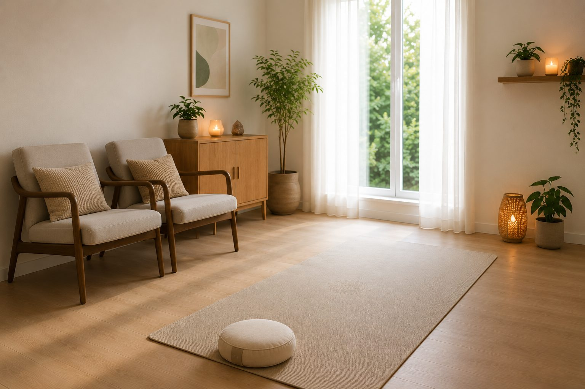
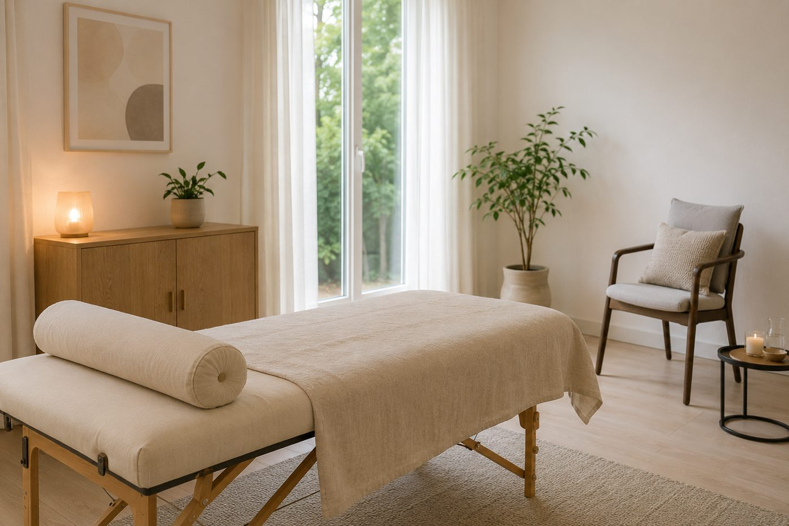

Ademtechnieken afgestemd op jouw hulpvraag. We beginnen met kennismaken en een rustige intake, en bouwen van daaruit samen verder.
Je vertelt kort wat er speelt; ik vertel of en hoe ademtherapie kan helpen. Vrijblijvend, gewoon kijken of we bij elkaar passen.
Met een kennismakingsgesprek, testen, vragenlijsten en observatie brengen we je hulpvraag en adempatroon in beeld. We nemen een behandelvoorstel door en ik leg uit hoe we te werk gaan en wat je kunt verwachten.
We werken met de techniek die bij jouw hulpvraag past, of een combinatie. Je krijgt oefeningen mee: klein en herhaalbaar, zonder druk.
We kijken samen terug op wat er veranderd is en wat je meeneemt. Zo nodig spreken we opvolging af.
Twee wegen, afgestemd op jouw hulpvraag, soms een combinatie

Onze ademhaling wordt grotendeels automatisch aangestuurd door het zenuwstelsel. Stress, spanning, pijn of ingrijpende gebeurtenissen kunnen ons adempatroon beïnvloeden. Meestal is dat tijdelijk, maar soms ontstaat een patroon van sneller, hoger of oppervlakkiger ademen.
Een verstoord adempatroon kan bijdragen aan klachten zoals vermoeidheid, benauwdheid, onrust, hoofdpijn, buikklachten, (spier)spanningsklachten of een verstoorde slaap. Daarnaast blijft het lichaam gemakkelijker in een staat van paraatheid, waardoor ontspanning en herstel minder ruimte krijgen.
Met regulerende ademtechnieken krijg je inzicht in jouw adempatroon en leer je je ademhaling bewust af te stemmen op wat je lichaam nodig heeft. Zo ondersteun je het natuurlijke herstelvermogen en ontstaat er meer ruimte voor ontspanning, balans en veerkracht.

Er is een wereld waar we met ons hoofd niet bij kunnen, een innerlijke wereld die in ons onderbewuste leeft. Door bepaalde ervaringen passen we onbewust onze ademhaling aan: als we minder ademen, voelen we minder. Gebeurt dat te vaak, dan raken we de verbinding met onze volledige ademhaling kwijt en ontstaat er spanning in het lijf.
De bewust verbonden ademtechniek is een effectieve manier om toegang te krijgen tot die innerlijke wereld. Je wordt deskundig en veilig begeleid in het toelaten van wat gevoeld wil worden: oude patronen doorbreken, bevrijden wat ooit, vaak onbewust, is vastgezet, en loslaten wat je niet meer dient. Zo herstelt de balans en harmonie in je lichaam.
Vertel kort wat er speelt. Ik bel of mail binnen één werkdag terug om een moment te plannen dat past.
Wat je deelt, blijft tussen ons. Altijd.